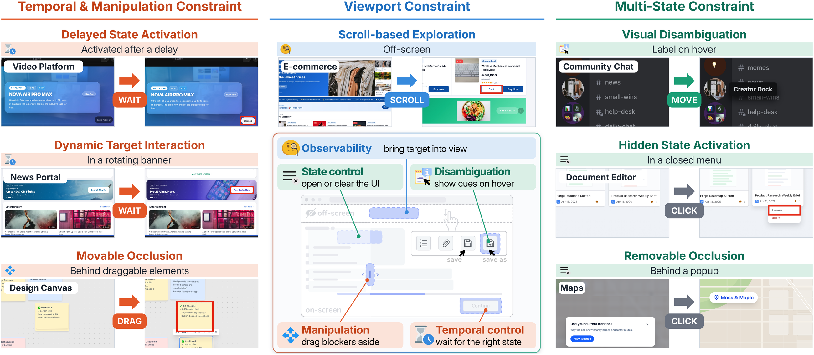
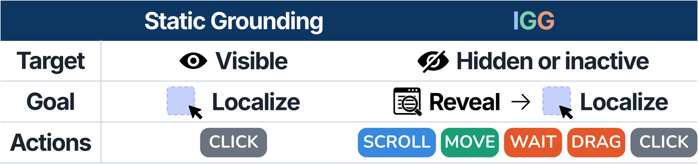
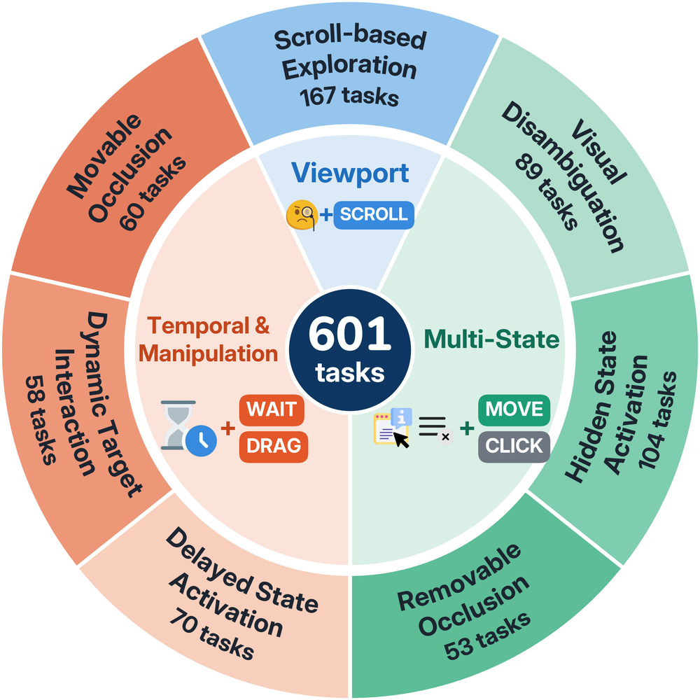
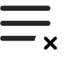
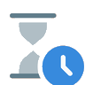
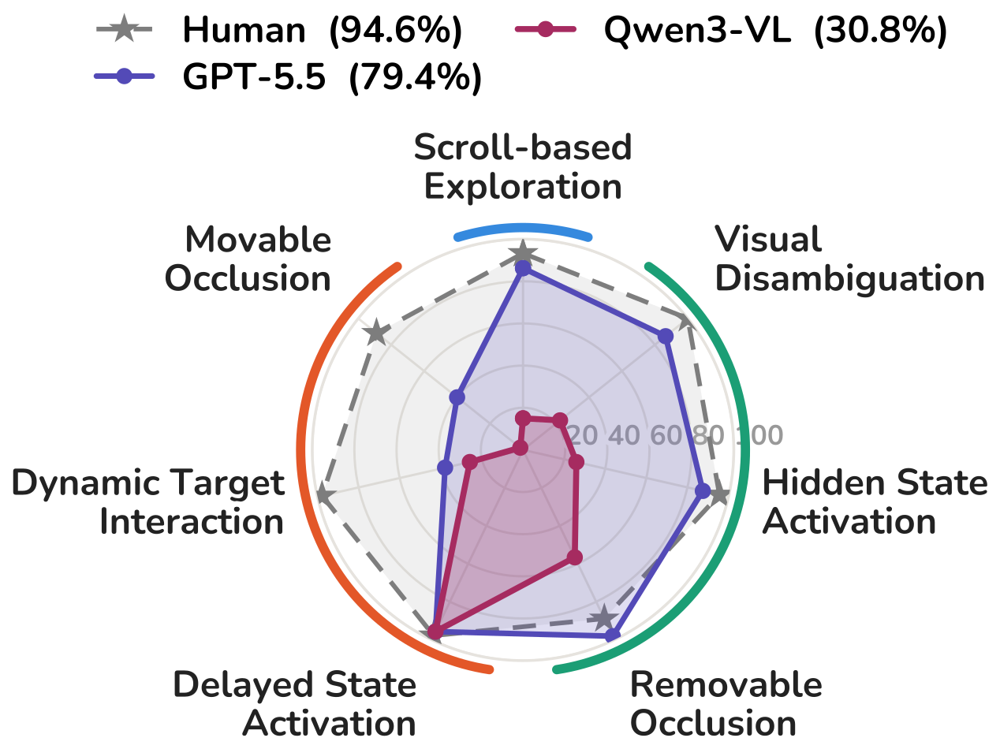
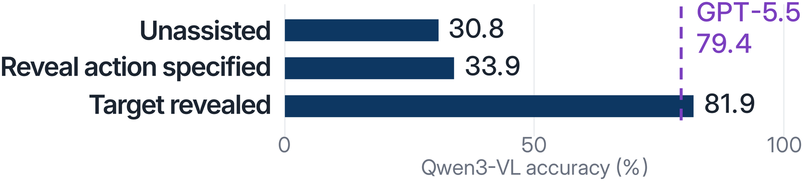
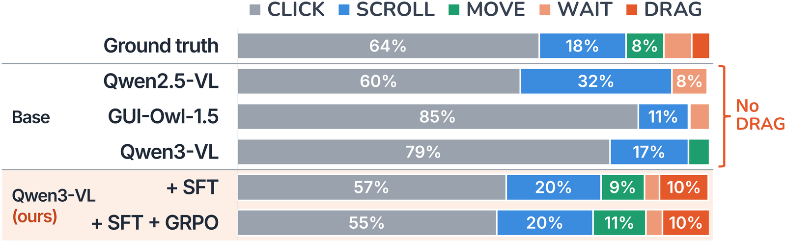
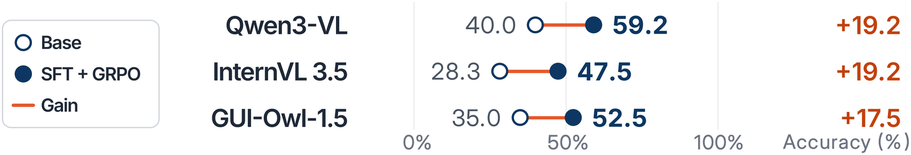
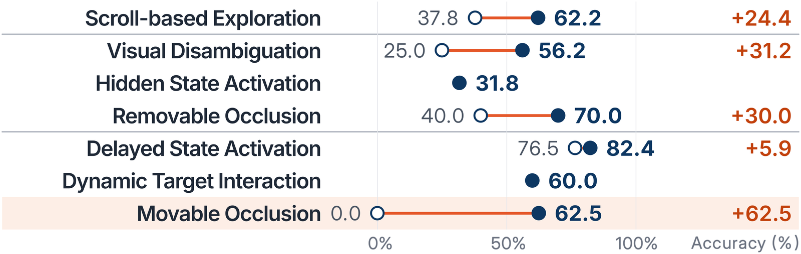

Your turn: Just for fun!
Practice mode
Human Leaderboard
GA: tasks solved (%). TT: average time across all four tasks.
Loading records…
| Rank | Player | GA ↑ | TT ↓ | Date | Your record |
|---|
What is IGG?
IGG evaluates GUI grounding when targets must first be revealed through interaction.

Task
Agents use screenshots and action history to reveal and click the target in up to eight actions.

Benchmark
601 tasks across 16 web environments modeled on familiar applications.

- Observabilitybring the target into view
- Disambiguationreveal cues on hover

State controlexpand controls or dismiss overlays
Temporal controlwait for the right state
- Google Calendar
- Google Docs
- Google Sheets
- Notion
- Gmail
- VS Code Web
- Figma
- GitHub
- Discord
- Twitter / X
- Spotify
- Netflix
- YouTube
- Walmart
- Google Maps
Results
Human and model performance
Human participants achieve 94.6% accuracy in our study. On the full benchmark, GPT-5.5 reaches 79.4% and the strongest evaluated open model reaches 31.6%.

Revealing the target
Specifying the reveal action raises Qwen3-VL’s accuracy from 30.8% to 33.9%. Revealing the target for the model raises it to 81.9%.

Learning to reveal targets
Base models rely mostly on clicks and never use drag.

SFT followed by GRPO improves accuracy by 17.5–19.2 percentage points across three 8B models. Qwen3-VL’s accuracy on movable occlusions rises from 0% to 62.5%.


Citation
@inproceedings{kim2026igg,
title = {{IGG}: A Benchmark for Interactive {GUI} Grounding under Visibility Constraints},
author = {Kim, Kyeongseon and Son, Jiyeon and Oh, Tae-Hyun},
booktitle = {Proceedings of the 2026 Conference on Empirical Methods in Natural Language Processing},
year = {2026}
}